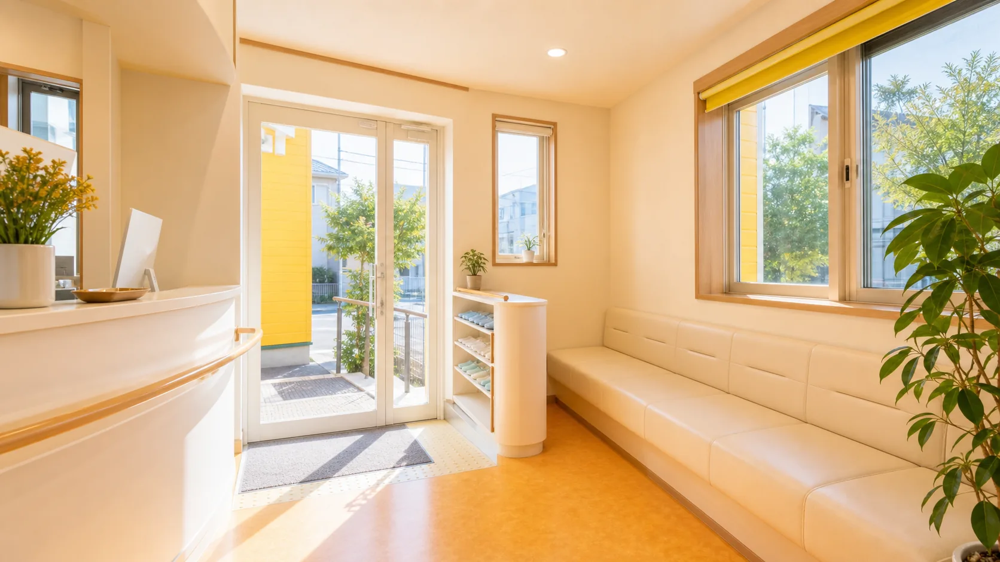
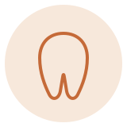
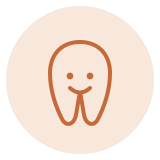
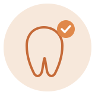
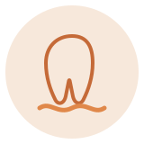
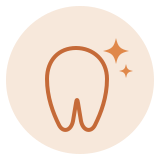
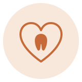
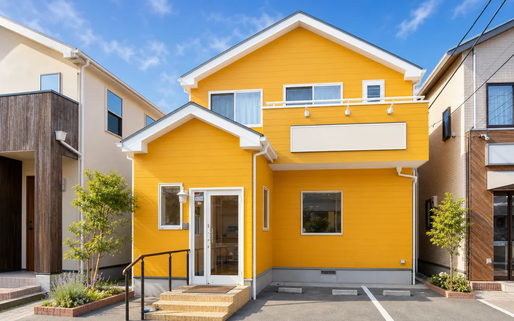
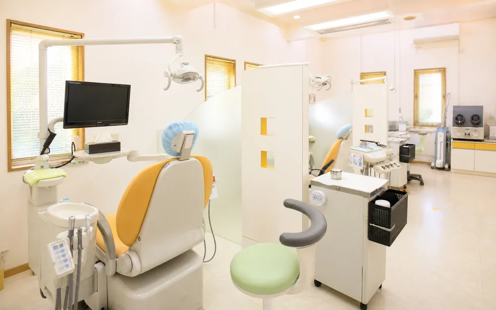

藤沢市辻堂6丁目の歯医者「辻堂がじゅまる歯科」｜駐車場2台｜2026年8月1日 開院予定｜土日も診療
藤沢市辻堂6丁目の歯医者「辻堂がじゅまる歯科」｜駐車場2台｜2026年8月1日 開院予定｜土日も診療


院長桑田 淳
お子さまから大人の方まで、ご家族みなさまで安心して通える歯科医院。治療の内容を丁寧にお伝えし、ご納得いただいたうえで一緒に進めていく診療。そんな医院づくりを目指して準備を進めています。
お子さまの予防から、大人のむし歯・歯周病の治療まで。年齢で区切らず、家族の歯をまとめて診ます。
何をするのか、いくらかかるのか。治療を始める前に、先にお伝えします。納得できないまま進めることはしません。
お車2台分の駐車場をご用意します。お買い物のついでに寄れる場所です。通い続けやすさも、治療の一部と考えています。
辻堂で、お子さまから大人まで。一般歯科・予防から、マタニティや自費の治療まで対応します。

むし歯・歯の痛みの治療。歯をできる限り残すこと（抜くのは最後の手段）を心がけます。
くわしく見る
お子さまのむし歯予防と治療。年齢に合わせて対応します。
くわしく見る
定期検診とクリーニングで、むし歯・歯周病を防ぎます。
くわしく見る
歯ぐきの腫れ・出血の検査と治療を行います。
くわしく見る
歯を白くし、自然な明るさを目指します（自費）。
くわしく見る
妊娠中の歯ぐき・むし歯のケア。体調に合わせて対応します。
くわしく見る
スポーツのケガから、歯やお口を守ります（自費）。
くわしく見る
透明なマウスピースで、目立たず歯並びを整えます（自費）。
くわしく見る
失った歯を補います（自費・対応予定）。
くわしく見る
外観 受付
受付 待合室
待合室
診療室 カウンセリング
カウンセリング 設備
設備※写真はイメージです。実際の院内は開院前に撮影し差し替えます。
| 月 | 火 | 水 | 木 | 金 | 土 | 日 | |
|---|---|---|---|---|---|---|---|
| 午前 | ● | - | ● | ● | ● | △ | △ |
| 午後 | ● | - | ● | ● | ● | △ | △ |
平日 10:30-13:30／14:30-19:00 △＝土日 9:00-14:20 通し診療（昼休みなし）
〒251-0047 神奈川県藤沢市辻堂6丁目13-3
※ 建物の写真・道順のご案内は開院までに掲載します。
相談だけでも大丈夫です。
0466-36-8484 受付 平日 10:30-13:30 / 14:30-19:00 土日 9:00-14:20 通し（火・祝 休診）
※ ただいま開院準備中のため、お電話・WEB予約がつながらない場合がございます。お問い合わせは下記フォームまたはメールが確実です。